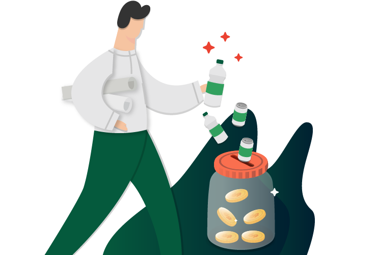

Fitur Samkuriang.
Scan
sampah.
Anda dapat memilah jenis dan bentuk sampah dengan mudah dengan bantuan object detection pada aplikasi SAMKURIANG.

Search
bank sampah.
Mencari bank sampah terdekat dengan lingkungan anda menjadi mudah dan menyenangkan menggunakan SAMKURIANG.
Navigasi ke
bank sampah.
Bertemu dengan bank sampah terdekat belum lengkap jika tidak adanya navigasi menuju ke tempat tujuan, di SAMKURIANG anda dapatkan itu secara gratis.


Tabungan
sampah.
Sama halnya dengan bank kovensional, bank sampah yang anda daftarkan pada SAMKURIANG dapat menyimpan duit hasil pertukaran sampah secara realtime dan anda dapat ambil itu kapan saja.